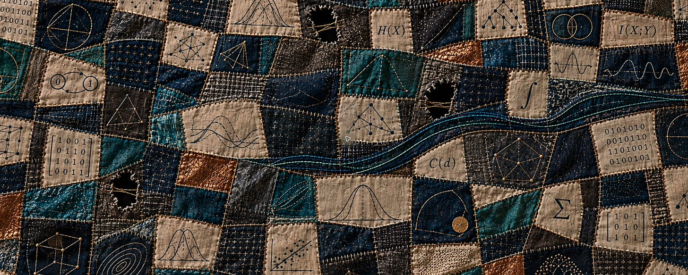
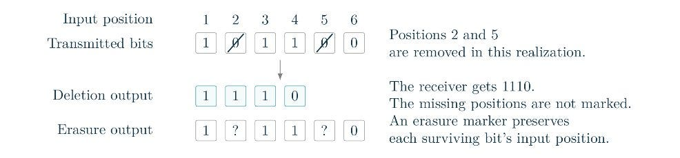
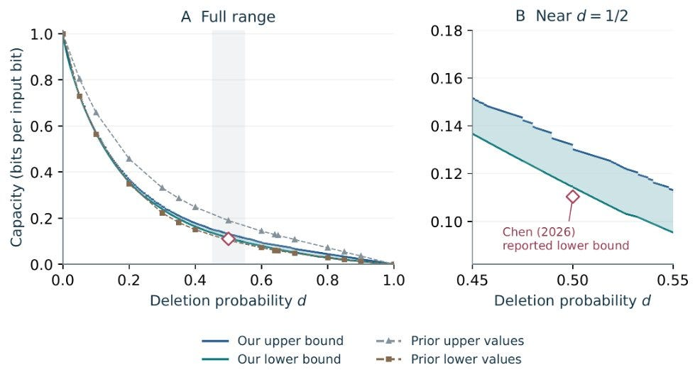
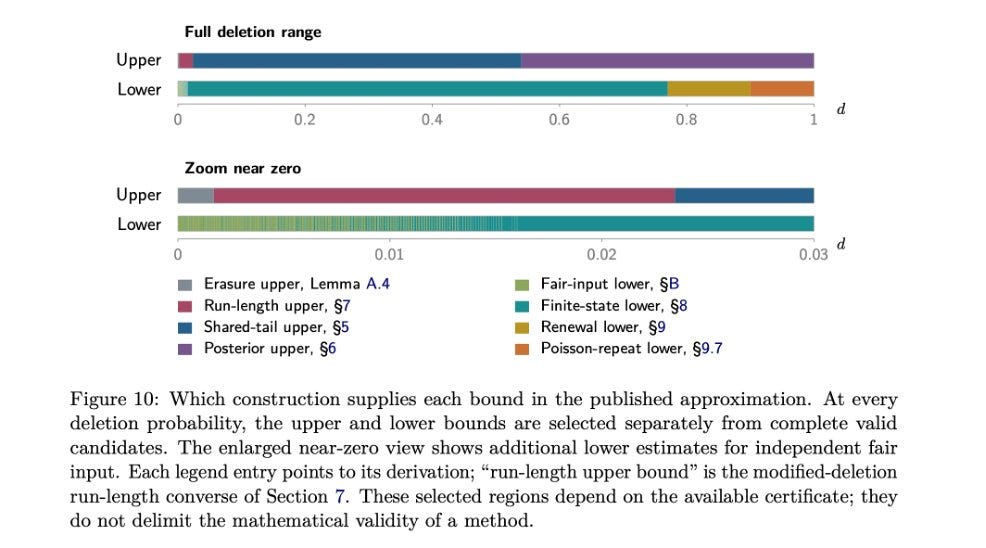

TLDR: A few weeks ago I asked AI agents to find the capacity of the deletion channel, a problem open since the 1960s. They did not resolve it, but after > 10 billion tokens combining old and new techniques, and using hundreds of GPU hours, they found an approximation to within 0.0095 bits. This also sent me down a rabbit hole of thinking about what counts as human contribution, and whether useful results have to be beautiful.
The paper, code, certificates, and reproduction instructions are available in the github repo11. anadim/binary-deletion-channel-capacity: Paper, exact capacity bounds, verification code, and reproduction instructions for the binary deletion channel. GitHub repository..
But let me tell you a bit more about it, and my thoughts on these pursuits.
The deletion channel is one of the simplest point-to-point channels studied since the 1960s22. M. Cheraghchi, J. Ribeiro. An Overview of Capacity Results for Synchronization Channels. arXiv:1910.07199, 2019.. It is also perhaps the simplest one for which, we still, do not know its capacity.
But what is capacity? Think of it as the maximum amount of information you can pack into each transmitted bit while allowing the receiver to decode your message reliably. Doing that requires coding theory magic, like adding parities and creating local and global structure among a typically long sequence of transmitted bits. Coding theory is an art and a science!
However, no matter what tricks you pull, capacity cannot exceed 1 bit per transmitted bit. It would also be exactly 1, if the channel between the transmitter and receiver didn’t do weird things to the bits, like flipping, erasing, or deleting them. For example, for the channel that erases bits but marks them as missing (aka, the erasure channel33. “Binary erasure channel.” Wikipedia.) the capacity is exactly 1 − e, where e is the erasure probability. We also know how to design codes that approach that limit. How neat!
The deletion channel is ridiculously similar: each bit is deleted with some probability and the receiver gets the surviving bits. BUT! The missing positions are not marked. This extra uncertainty is precisely what makes the problem very hard. So hard that its capacity has been open since the 60s.

Capacity is justifiably one of the most important quantities in information theory, and has been a central obsession for many information and coding theorists alike.
But why care about the deletion channel? The deletion channel is in fact practically relevant to communication without reliable synchronization and DNA storage, and is closely connected to trace reconstruction2. And knowing its capacity tells you how far you can go by designing better encoders and decoders, and IF you are lucky, the proof can inspire ideas for actual practical codes that can get you close to capacity.
Why the deletion channel?
I have never personally worked on the deletion channel. But I know several very smart and accomplished people who have, and I remember it was one of the problems that PhD advisors used to passionately dissuade students from ever touching. You see, it belongs in the scary list of open info theory problems. In this scary list you will also find the relay channel44. “Relay channel.” Wikipedia., the broadcast channel55. C. Nair, A. El Gamal. An outer bound to the capacity region of the broadcast channel. arXiv:cs/0605105, 2006., the interference channel66. “Interference channel.” Wikipedia., and basically any channel capacity problem that required heavy machinery to even improve a typically loose bound to something that’s slightly less loose.
Yet I was convinced that one now could point the AI death star at hard info theory problems, and I indeed tried doing so with my MIMO detection one77. @DimitrisPapail. Post on X, Aug 8, 2026.. But I got some pushback that, even though that MIMO problem was in fact open, it was within reach of the community and not that hard. So I was further curious: how much harder of an info theory problem can current AI agents help solve? The deletion channel seemed like a potentially good test case to see if it would crack under the pressure of a billion token blizzard.
Of course, since then, OpenAI has reported a Navier–Stokes solution using around 10,000 agents88. OpenAI. On the Navier–Stokes Millennium Prize Problem., so we certainly know agents can now solve extremely hard problems (perhaps at the level of any capacity open problem). But hey, I started this a few weeks ago, and I did not use 10k agents.
Closing in on the capacity
For open capacity problems, one typically establishes two types of bounds: an information rate that you can achieve, which gives a lower bound on capacity. And then a ceiling above which you cannot communicate reliably, no matter how good a coding theorist you are. We call the latter a converse, or an upper bound. The true capacity lives somewhere between the two, and you kinda like it when they are very close to each other. A celebrated example of this type of a result is Etkin, Tse, and Wang’s Gaussian interference-channel capacity to within one bit99. R. Etkin, D. Tse, H. Wang. Gaussian Interference Channel Capacity to Within One Bit. arXiv:cs/0702045, 2007., posted in 2007.
So a few weeks ago I did ask Sol, Fable, and then Astra when it came out to help me figure it out. Since the whole range of deletion probability seemed too much, I asked if they could find the exact capacity of the channel for 50% deletions.
And after a few days... They could not solve it.
So inspired by the Etkin et al result, I asked if we can approximate it to within a small fraction of a bit. Something tiny, eg maybe an ε additive approximation to it. And indeed, after multiple long sessions they managed to find a computer-assisted proof (though I suppose now by default all proofs will be computer assisted) that approximates capacity to within 0.0095 bits per transmitted bit, for every deletion probability.
That is the deletion capacity to within less than one hundredth of a bit. A very solid approximation and, as far as I understand, a significant improvement over prior work.
What actually goes into the proof? The lower bounds have to construct particular ways of generating the transmitted bits: finite-state sources, including Markov, and sources that choose the lengths of runs (aka runlengths) of zeros and ones. Then one has to bound how much information survives deletion, keeping track of ambiguities that perhaps simpler analyses discard. The upper bounds take on a different job: they need to cover every possible input distribution, as you have to prove that a rate is impossible no matter what one tries at the input. For that they combined entropy increment inequalities with an auxiliary predictor (a chosen probability for the received bits, that’s not the true one, but one that is useful to construct said bounds) and then using bounds on the effects of input bits beyond any finite window we inspect.
So what is actually proved? Take the midpoint between the lower and upper bounds, that is a capacity estimate. That estimate cannot be farther than 0.0095 bits from the true capacity of the deletion channel.
At some deletion probabilities, the interval between our lower and upper bounds is roughly 10x smaller than prior state of the art bounds.

Capacity sits between the blue and teal curves. Dashed lines connect selected reported prior values; the right panel zooms in near 50% deletion. The comparison includes Venkataramanan, Tatikonda, and Ramchandran, Rubinstein and Con, Pinto and Ribeiro, and the reported lower bound of Chen, among others cited in the paper.
This builds on A LOT OF prior information theory work, including bounds by Drinea and Mitzenmacher1010. E. Drinea, M. Mitzenmacher. Improved lower bounds for the capacity of i.i.d. deletion and duplication channels. IEEE Transactions on Information Theory, 2007., Fertonani and Duman1111. D. Fertonani, T. M. Duman. Novel Bounds on the Capacity of the Binary Deletion Channel. arXiv:0810.0785, 2008., and Venkataramanan, Tatikonda, and Ramchandran1212. R. Venkataramanan, S. Tatikonda, K. Ramchandran. Achievable Rates for Channels with Deletions and Insertions. IEEE Transactions on Information Theory, vol. 59, no.11, pp. 6990-7013, Nov. 2013., analytical results for small deletion probabilities by Kanoria and Montanari1313. Y. Kanoria, A. Montanari. Optimal coding for the deletion channel with small deletion probability. arXiv:1104.5546, 2011. and Kalai Mitzenmacher and Sudan1414. A. Kalai, M. Mitzenmacher, M. Sudan. Tight asymptotic bounds for the deletion channel with small deletion probabilities. IEEE ISIT, 2010., and more recent improvements by Rubinstein and Con1515. I. Rubinstein, R. Con. Improved Upper and Lower Bounds on the Capacity of the Binary Deletion Channel. arXiv:2305.07156, 2023. and Pinto and Ribeiro1616. M. Pinto, J. Ribeiro. Improved Capacity Upper Bounds for the Deletion Channel using a Parallelized Blahut-Arimoto Algorithm. arXiv:2604.05867, 2026.. For more of the history and the ideas behind these bounds, see Cheraghchi and Ribeiro’s survey2.
So indeed the agents combined existing ideas with additional arguments over many GPU hours and over a lot of tokens. They seemed to also use novel bounds derived by hammering down on directions that were blocked before. Different ingredients help at different deletion probabilities and the final result is a Frankenstein patchwork of bounding techniques.
Ta da:

How do we get to computational results? The mathematical arguments reduce the bounds to explicit, checkable inequalities. Computation checks those inequalities using exact integer and rational arithmetic, interval arithmetic, and controlled rounding.
What was my actual contribution
I would be lying if I suggested that I had any familiarity with the techniques needed to prove things for the deletion channel.
Yet I had a few thoughts about what useful inputs might look like. I started thinking of 2D images, e.g., an image is implicitly low rank, and you can sometimes recover it after losing many entries1717. E. J. Candes, B. Recht. Exact Matrix Completion via Convex Optimization. arXiv:0805.4471, 2008.. Hi matrix completion friends! But that structure also limits how much information it contains. Too much redundancy. Perhaps balancing redundancy from reconstructibility makes sense and I gave a few thoughts on what types of constructions to try.
I also kept thinking about the “image” of a continuous function like a sinusoid: how much of its structure survives if you delete half its pixels? Could some useful version of these tradeoffs help us design inputs and improve the bounds?
Most of my ideas did not seem to go into the actual constructions, but it gave me a handle to think about the problem and what kind of questions to ask.
I did push a lot on presentation and simplifications, on having figures that are self contained, on writing according to the elements of style1818. “The Elements of Style.” Wikipedia..
And this ended up being a pretty interesting, very long-horizon agentic experiment. Certainly the longest I’ve shared, and this is the summary of my meta findings:
It ran for 3-4 weeks, non stop (thank you Tibo for the resets, this wouldn’t have been possible without you.)
I used both Claude Code and Codex, as per usual, but this time I had them communicate with each other, split compute resources, and audit each others work.
The choice of what agent I used depended mostly on usage available, which also led me to think about an optimal agent-allocation algorithm1919. @DimitrisPapail. Post on X, Sep 8, 2026., lol.
I felt much more confident in Sol and Astra than Fable. In my experience, Fable was too sycophantic and very sloppy which decreased my trust in its results.
Very annoyingly even during math work I sometimes got routed back to Opus 5. I think Claude Code just didn’t like talking to Codex and its safety filters were going off too easily.
In contrast to my earlier MIMO detection2020. @DimitrisPapail. Post on X, Aug 8, 2026. result, I sadly do not fully understand everything going on in the proof.
Yet, according to Codex, I gave reasonable advice that was more concrete than “try harder.”
I went back and asked Codex to specifically look across the conversations for examples of consequential things I perhaps did. Examples were: I suggested to start with 50% deletion to see how far that would could go. As the bounds improved, I asked on blockers and we identified that below 0.01 would require a ton more gpus so we decided to stop. Then I suggested whether we could work across the whole [0,1] deletion probability range in windows by proving a bound at one probability and then using whatever analytical algebra we could to derive bounds epsilon around it, then slowly cover everything.
At another point the agents were struggling around ~60–70% deletion and gave me an explanation for why that region was difficult, which smelled like BS. I asked whether the same explanation applied to other regions that seemed to work out faster, and after checking they acknowledged that indeed their argument was wrong and too general to explain what was happening and kinda resolved the issue of the slowdown.
I can’t say how much my personal tokens directed or sped up the proof, but it overall I am convinced that what I did was more useful than just saying “go for the breakthrough, try harder.”
So I guess I did not do nothing and it did not feel as superficial clicking around. I felt intellectually invested and engaged across questioning explanations, deciding what to pursue, and by the way, I actually paid for the compute :). It felt like research, even though my role in producing the result was very different from what I’m used to.
That is to say that I put time in this. I put thought and resources and something potentially useful came out.
In terms of tokens, Codex estimates that roughly 18.3 billion tokens were spent on this, based on the recorded usage across the deletion channel related threads, agent work, and paper preparation from August 25 through September 15.
Is this kind of work useful?
I understand why work like this can bring mixed feelings, especially for people who have spent years developing the ideas that such a result builds on. There are reasonable questions about credit, about the role of the person directing the agents, about what we should value in the resulting work.
I don’t think those questions have easy answers. I do want to give all the credit to all the brilliant information theorists that worked on monumental problems and created many of the results that these models are using, and are trained on.
My hope is that people working on the deletion channel will find the results of the paper useful. They (or their agents) may be able to use the bounds, build on the methods, or reuse the computational work.
Could experts in the area have produced something like this themselves? Quite possibly. But if making it available saves them time and compute or gives them a better initializer for their next result, then that seems as non-trivially valuable.
This does not settle the question of credit but it does offer a reason to do this work, acknowledge what it builds on, and share it in a form that others can check and use.
The beauty and utility of Frankenstein results
The reality is that the above result was chiselled out by the raw force of GPU hammers. And it’s not very pretty. There’s no big story to tell about it.
Yet GPU hammers can be used to close in significantly on very hard problems across many scientific domains. And many times these solutions look like Frankensteined ideas found across a gazillion places, and it all stitches together so well that the contribution of each idea adds up so that the final artifact or result you are after is established.
For an AI agent, the goal is more precious and more holy than the storytelling around the ideas that were composed in the pursuit of it.
Yet to me, it feels a little sad that the beauty of the final artifact, or the process by which you arrive at it, is not at the level that one would desire it to be.
I am sad because I’m used to human researchers, who love telling stories. Beautiful stories that are easy to tell so that other researchers understand and appreciate them, and want to build on them.
Humans seem to carry, for lack of a better description, a weird kind of storytelling regularizer: a preference for results that fit into a clean narrative, ideally with one beautiful idea that makes everything click. That preference seems useful and pushes us, humans, to find and understand structure and explain things to each other.
Yet, AI agents don’t care. They will keep working on that ugly patchwork of a method until their goal is met. In this experiment, they seemed untethered to my own taste for a beautiful final answer. They did not crave an elegant story. They just tried to achieve their goal, the only goal they cared about: Find the capacity of the deletion channel.
Reality has no obligation to fit into the kind of paper we would most enjoy reading. Some problems may require an unappealing patchwork of arguments and the pure force of a thousand GPU hammers.
And it may be the case that for some of the hardest problems we posed to ourselves, a wall that has resisted us may give way under an exhausting combination of old and new, small and big, simple and complex ideas, stitched together across billions and billions of tokens, cemented in place by a ton of raw, unadulterated, cold machine FLOPs.
The results may be ugly, complicated, and “computer assisted”. Yet they may still help us understand something we could not understand before.
And maybe, that is more than OK.
Praise the GPUs.
The paper, code, certificates, and reproduction instructions are available in the following github repository1.